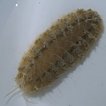
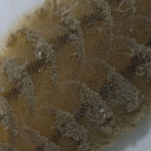
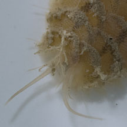
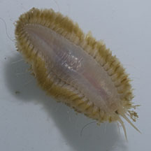
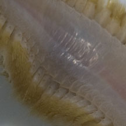
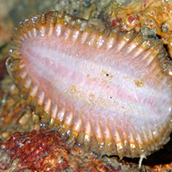

|
|
| worms text index | photo index |
|
worms > Phylum Annelida >
Class Polychaeta
|
| Scale
worms awaiting identification Family Polynoidae updated Oct 2019 Where seen? These tiny short bristley worms with scales are sometimes seen under stones or other hidden places. Many are commensals, living together with sea stars, sand dollars, sea urchins, sea cucumbers and sea anemones. Thus, they are found in a wide variety of ecosystems but are often overlooked. What is a scale worm? It is a segmented bristleworm belonging to the Family Polynoidae, Class Polychaeta, Phylum Annelida. The polychaetes include bristleworms, and Phylum Annelida includes the more familiar earthworm. Features: About 1cm long. The worm is flat and broad with lots of short hairy bristles along its sides, and a pattern of overlapping scales the upper side of the body. It has a well developed head with relatively long tentacles. It creeps slowly by undulating its bristles. Sometimes mistaken for a chiton, which is a mollusc with overlapping scales but lack the tentacles at the head and bristles along the side of the body. What does it eat? These tiny carnivores feed on small prey such as crustaceans, echinderms, other polychaetes, and snails. They also feed on sponges and hydroids and may also scavenge. |
 Terumbu Hantu, Apr 12 |
 Overlapping scales on the upperside. |
 Well developed head with tentacles. |
|
 Terumbu Hantu, Apr 12 |
 Lots of short bristles on the body sides. |
Well developed head with tentacles. |
| Scale worms on Singapore shores |
On wildsingapore
flickr
|
| Other sightings on Singapore shores |
 |
Links
|